Twenty-five motherboard components, fourteen chip regions, twelve engineering materials, and ten hardware milestones remain directly explorable.
GENERAL IT · HARDWARE ENGINEERING · VISUAL DIAGNOSTICS
GIT & MB
Inspect the physical board, then follow information through bytes, instructions, memory, buses, protocols, processor state, and rendered output. Every simulation identifies what is real, simplified, or conceptual.
Enter the silicon labSILICON-TO-SOFTWARE INTERACTIVE REFERENCE / V4.0 · MARC LAVOIE
Anatomy of a Computer.
Follow binary information from browser text to machine instructions, transistors, logic gates, processor registers, memory and motherboard interfaces. Select any component to connect its physical purpose with its electrical and digital behavior.
25 board components
14 chip regions
12 materials
10 milestones39 binary profiles11 interactive labs
Hover to identify · click to inspect · use + to zoomOriginal vector illustrations · conceptual layouts
Component directory
THE BINARY LAYER / SYSTEMS ENGINEERING
From 0 & 1 to an operating computer
What a bit means depends on the component. A CPU executes encoded instructions; memory retains data; interfaces transport framed information; voltage regulators deliver power. Explore the real distinctions.
00 / YOUR HTML SOURCE
Turn markup characters into real UTF-8 bytes
Edit a short HTML fragment and inspect its bytes. These are source-text data; the CPU executes the browser's machine instructions to process them.
RAW TEXT ENCODING
Hex and binary sequence
01 / VISUAL TRACE
A web page becomes visible pixels
Engineering fact: HTML is a markup format, not a CPU instruction set. A browser parses HTML into a DOM, CSS into styling/layout information, and JavaScript through an engine. The processor executes machine code; memory, interconnects, GPUs and display hardware complete the work. The exact pathway varies by operating system and browser.
02 / CHIP-BY-CHIP
Which bits exist at this component?
A motherboard is largely a physical communication and power-distribution platform. It has no single “motherboard binary instruction set.” The relevant instruction encoding, packet framing, data bus and electrical signaling depend on the specific silicon and interface.
03 / DIGITAL LOGIC
Build an eight-bit value
Toggle the cells from most-significant to least-significant bit. See decimal, hexadecimal, printable ASCII where applicable, and a conceptual logic-level waveform.
The high and low bands represent abstract Boolean states. Real voltage thresholds, termination, differential signaling, clock recovery and coding differ by interface; this picture is not a DDR5, PCIe or USB oscilloscope trace.
BOOLEAN CIRCUITS
Gate truth table and 8-bit ALU
This is a pedagogical 8-bit unsigned adder. It wraps at 256, reports carry-out, and shows zero and signed-overflow flags. A real processor contains many arithmetic units, pipelines and control mechanisms.
04 / ISA ENCODING
Real x86-64 machine-code bytes
These example bytes use defined x86 instruction encodings. The execution illustration is a simplified learning model, not a real decoder or an emulated CPU.
05 / EXTERNAL LINKS
Decode a link or chip command
Context is essential: illustrative data payloads are not valid entire bus frames. Packet and electrical encodings may involve scrambling, CRC, framing and symbol coding. For real device debugging, use the manufacturer’s controller documentation and applicable standards.
06 / SYSTEM CORRELATION THEATER
A single action crosses multiple layers of hardware
Choose a real-world computing operation, then walk the complete logical path. Each step ties data representation to the specific component that interprets or transports it.
COMPONENT ROUTE / CONCEPTUAL
Flow is conceptual: hardware pipelines run concurrently, and precise routes depend on system architecture.
07 / EXECUTABLE PEDAGOGICAL PROCESSOR
Assemble instructions, step the processor, inspect registers and RAM
EDU-8 is a deliberately invented, fully specified teaching ISA—not Intel, ARM or RISC-V. Every instruction is exactly two bytes so each execution step can be followed byte-for-byte.
EDITABLE ASSEMBLY
Source and machine encoding
Use one instruction per line: LDI 5, ADD 7, STA 0x80, JNZ label. Labels end with :; comments start with ;.
PROCESSOR STATE
Registers, flags and execution trace
FULL 256-BYTE RAM / 0x00–0xFF
Inspect program bytes and data memory
EDU-8 models an accumulator, a program counter, zero/carry flags, RAM, and an output port. Its opcodes and timing are fictional. Real cores have architecture-specific instruction sets, sophisticated memory subsystems, concurrency and fault models.
08 / TIMING AND WIRE FORMATS
How a logical byte turns into sampled signal edges
Compare two distinct serial transport conventions. Change the transmitted byte, select a sampling edge, and inspect which bit is currently on the wire.
ILLUSTRATIVE IDEAL DIGITAL SIGNALS · NOT A PHYSICAL OSCILLOSCOPE
09 / INSTRUCTION SET ENCODING
Decode actual x86 and RISC-V instruction fields
See how two real ISAs encode a register assignment. They do not share the same opcode format—even though both manipulate binary numbers.
MACHINE-CODE ENCODING
Instruction bytes in memory are not direct representations of HTML source text. The ISA decoder examples are valid educational encodings; dynamic binary translation, caching, speculative pipelines and actual browser compilation are outside this lab.
10 / VERIFY YOUR ENGINEERING MODEL
The chip-to-browser knowledge challenge
Practice the distinctions that prevent architectural mistakes: machine instruction versus protocol command; physical routing versus data interpretation; encoding versus execution.
Scores live only in this page session; no account, backend, tracking, or external data collection is used.
Follow the signals. Understand the system.
Trace power from the EPS connector through the VRM to the CPU; then inspect memory channels, PCI Express, and storage interfaces. Enable the conceptual route overlays and explore each component in detail.
Engineering evidence · Version 4.0
A motherboard atlas that connects the physical stack to software behavior.
The original illustrated atlas is preserved in full and extended into a recruiter-reviewable engineering system: observable interactions, explainable data paths, executable teaching models, documented assumptions, and reproducible package evidence.
Search the board and chip catalog to see the data, instructions, packets, electrical role, example encoding, and verification boundary associated with each region.
Step through page rendering, UEFI boot, NVMe reads, keyboard input, HTTPS response handling, and display output while correlating each stage to hardware.
Edit UTF-8 source, build bytes, operate an 8-bit ALU, decode protocols, assemble and step EDU-8, inspect RAM, compare timing, and decode x86/RISC-V fields.
The engineering challenge explains every answer and pairs it with a searchable glossary covering architecture, buses, firmware, logic, and silicon.
The lab runs locally in the browser with no tracking, account, backend, package installation, automatic external requests, or execution of user-supplied code.
Evidence boundary
The board and system routes are educational abstractions, not repair CAD, oscilloscope captures, vendor firmware, or a cycle-accurate hardware emulator. EDU-8 is an invented teaching ISA; x86 and RISC-V examples are identified separately as real instruction encodings. Always verify the exact board manual, power state, ESD controls, component compatibility, and manufacturer procedures before physical work.
Published technical record
Read the architecture behind the interaction.
The handoff’s research notes, data maps, security review, and instruction-set specification are published alongside the lab so a reviewer can evaluate the model rather than relying on presentation alone.
System designArchitecture & data flowModule ownership, initialization, state, and cross-navigation
Executable modelEDU-8 instruction setOpcodes, registers, flags, memory, and examples
Hardware catalog39 chip profilesComponent-by-component binary and signal reference
Machine-readableCSV component mapPortable mapping for review and analysis
Machine-readableJSON component mapStructured source for tooling and validation
AssuranceQA & security reviewThreat model, limits, accessibility, and regression scope
ResearchSource reference notesStandards and technical source boundaries
ProvenancePackage manifestVersioned contents, ownership, and release record
Deployment recordSite integration notesVerified inputs, architecture, correction, QA, and evidence limits
Interface proof
The complete visual record, connected to one live model.
Representative captures from both verified handoffs preserve the illustrated foundation, advanced laboratories, and responsive states. Use the live controls above for the full experience.
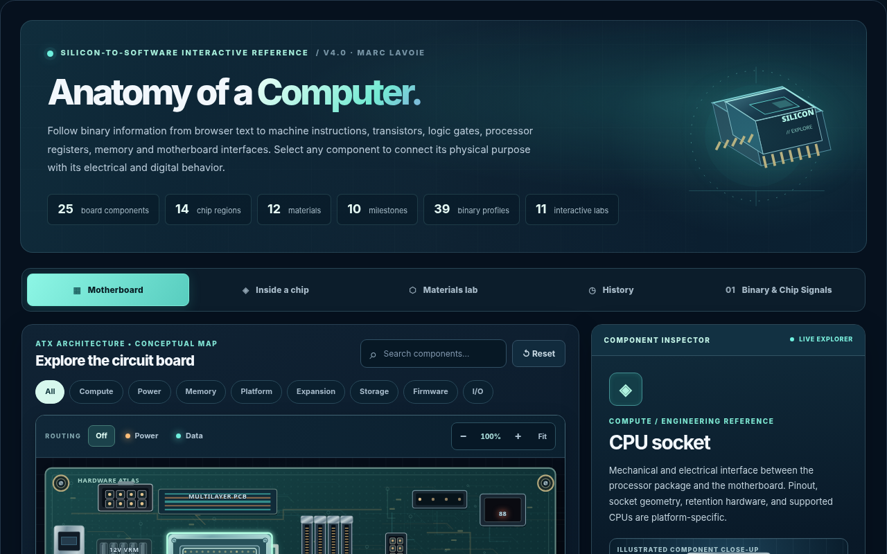
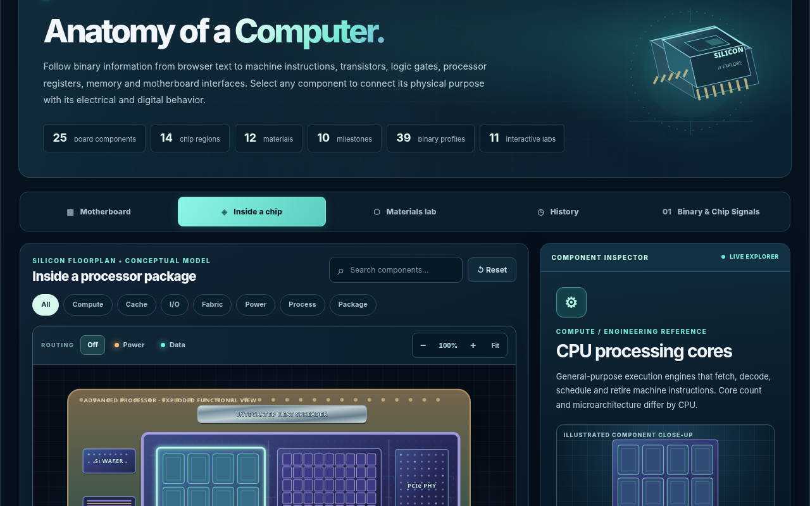
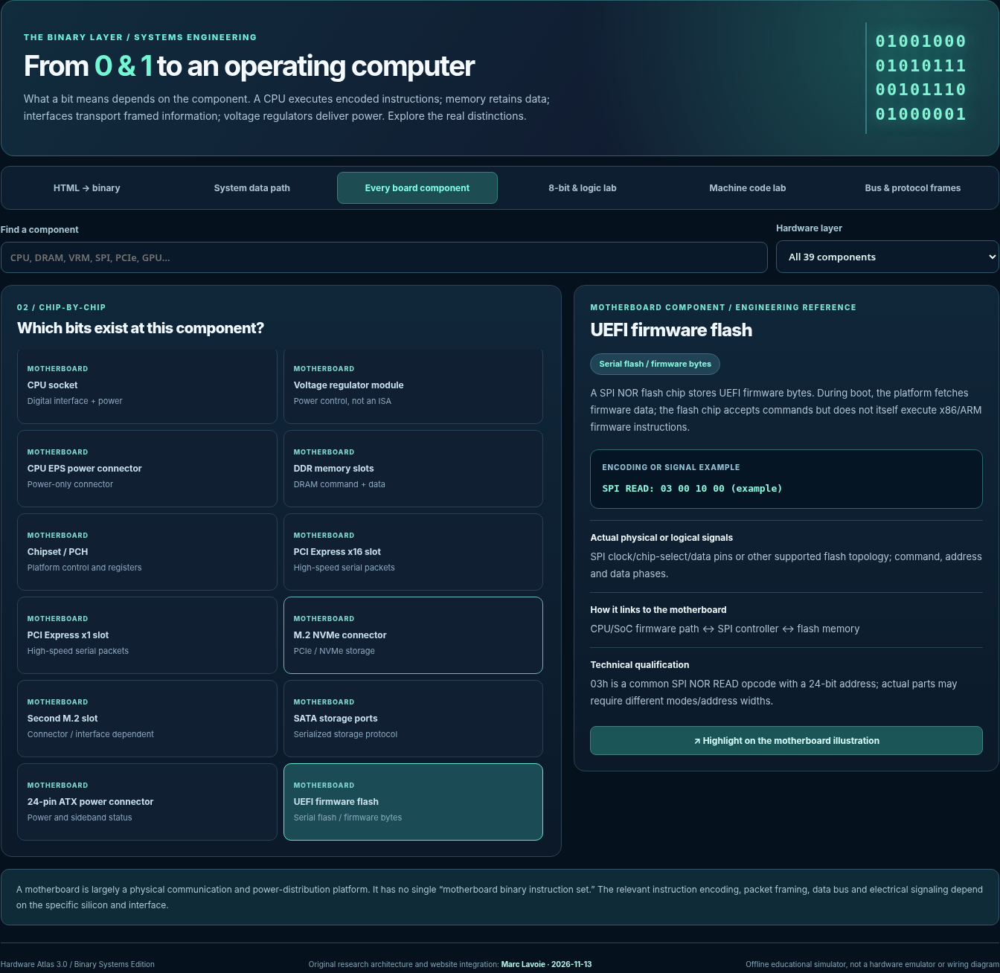
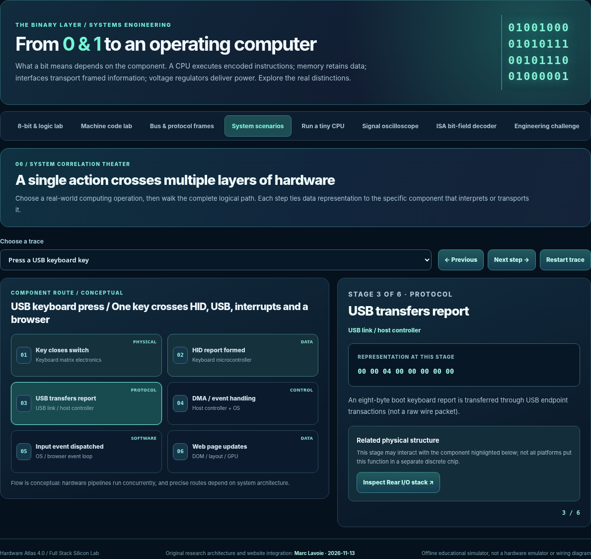
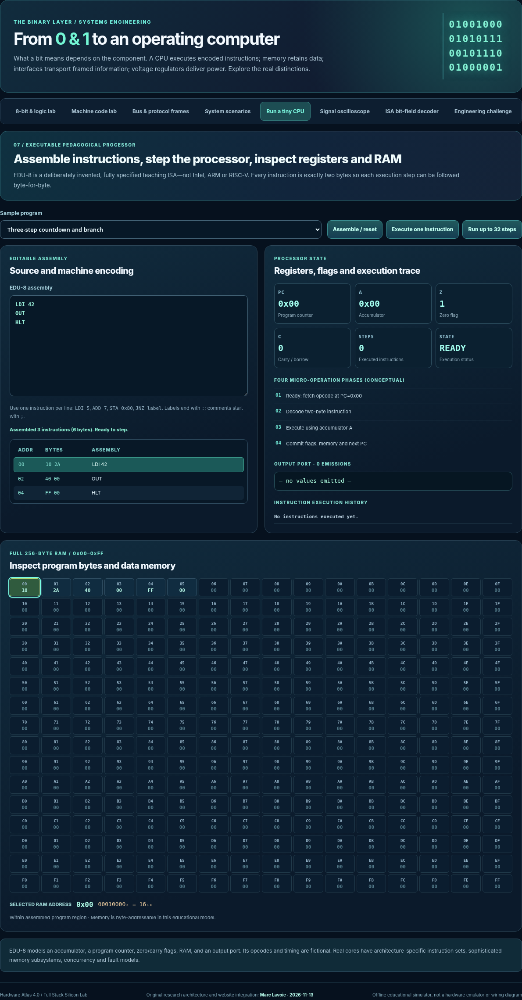
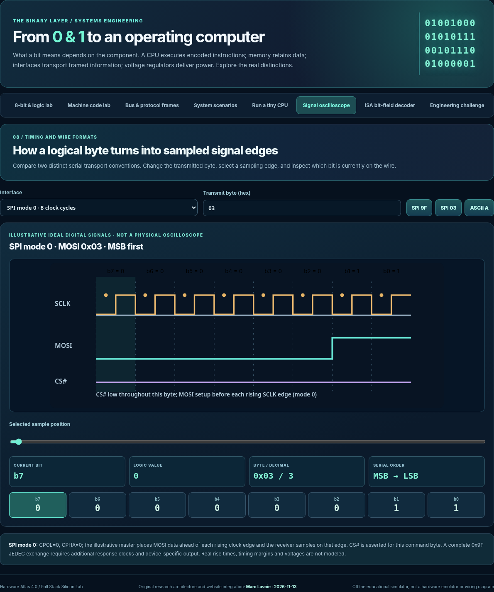
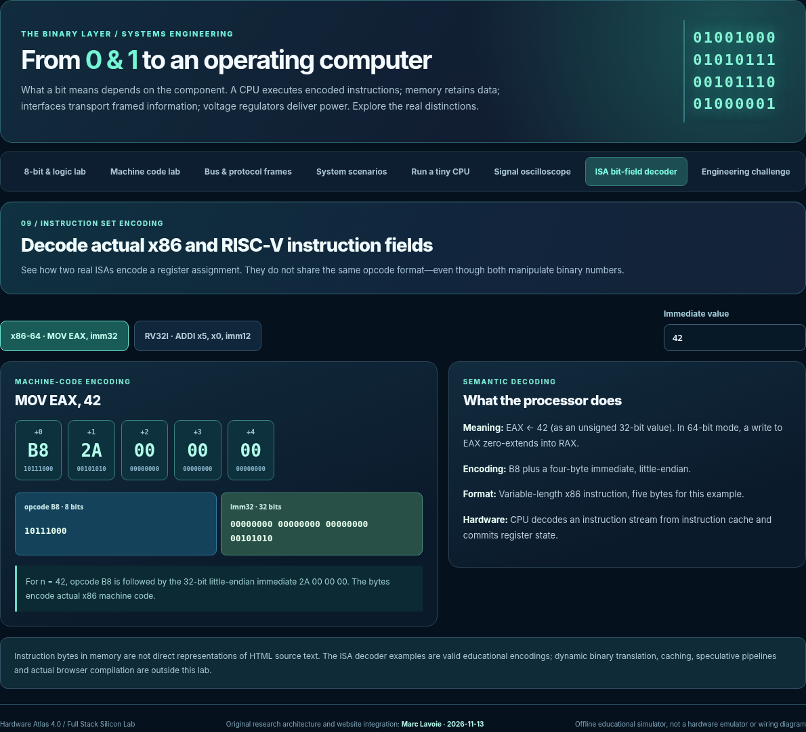
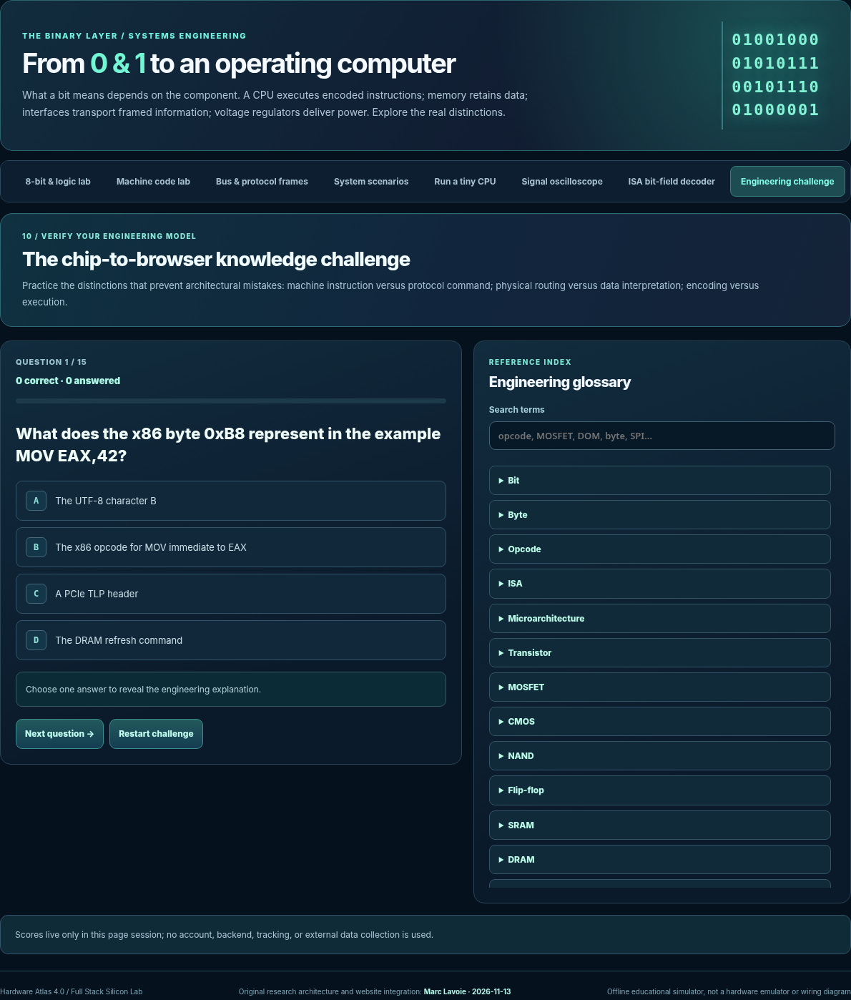
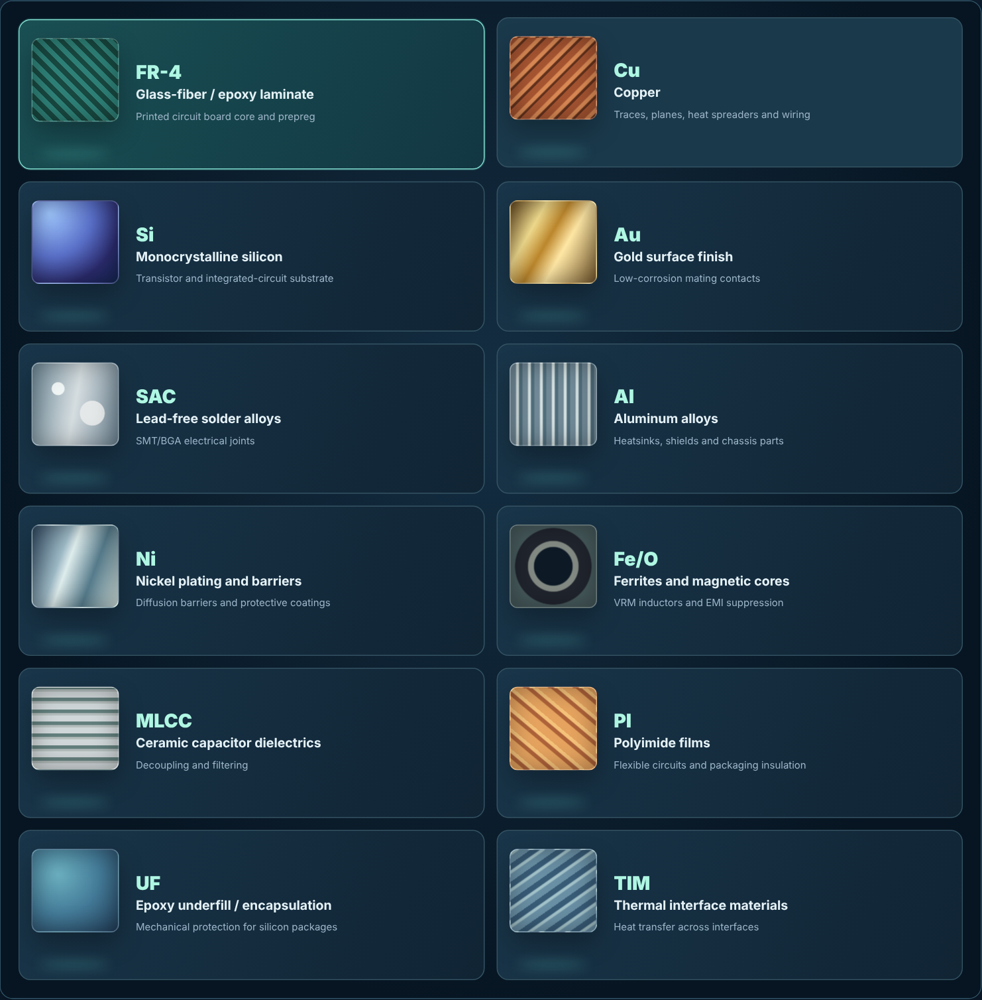
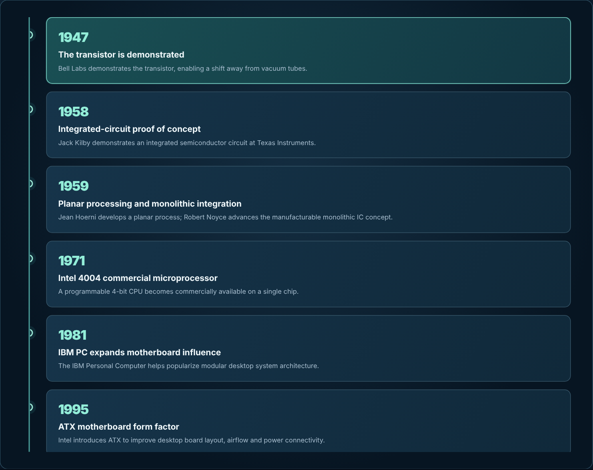
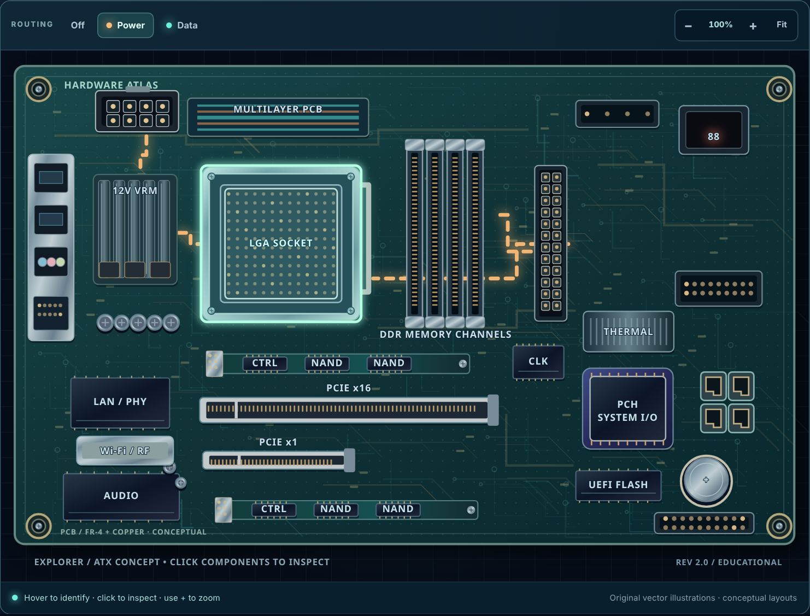
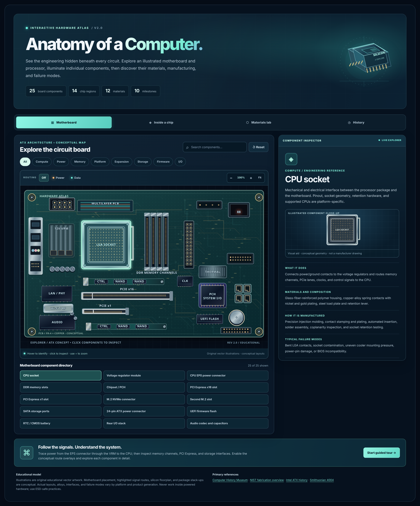
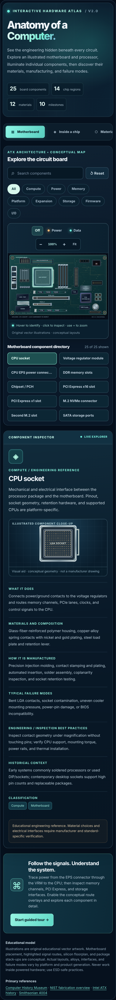
Open every additional source capture


Verified source packages
V2 illustrated atlas ·
38893704296065a3f65f1c60b69b4b96c0f72d5eb2e018c16d10c909b04635d1
V4 full-stack silicon lab · a1f8a4b1b9f988eb1779b2feb6dd76a3e113a466cce872483972fb7207310d63
Package records: V2 handoff · V2 changelog · V2 checksums · V4 handoff · V4 changelog · V4 checksums